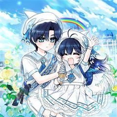
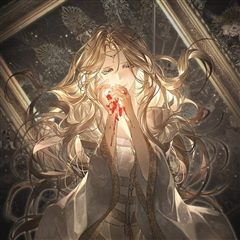
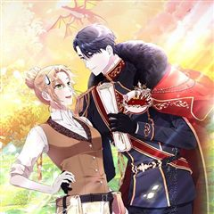
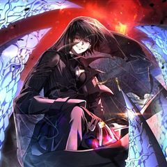
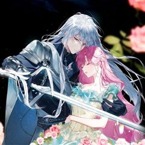
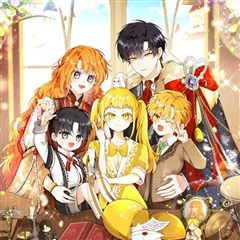
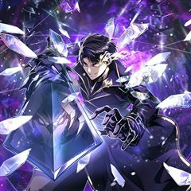
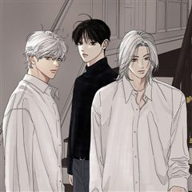

카카오웹툰 추천 인기 순위 TOP 30
카카오웹툰에서 지금 연재 중인 작품을 카카오웹툰 공식 인기 순위 순서로 모았어요. 네이버웹툰·카카오웹툰·레진코믹스에서 조건에 맞는 작품 944개 중 인기 순으로 30개를 골랐어요. 인기 TOP 3: 철혈검가 사냥개의 회귀, 천하제일인의 소꿉친구, 대사형 선유
2026-10-12 기준 · 성인 작품 제외
내 취향으로 더 좁혀서 추천받기 →-
1
 카카오웹툰
카카오웹툰철혈검가 사냥개의 회귀
바스커빌 가문의 사냥개 '비키르'. 사냥개로서 가문에 충성한 보답은 모함과 누명으로 얼룩진 단두대의 칼날이었다. "다시는 토끼를 잡고 나면 삶아지는 사냥개처럼 살지 않겠노라." 그런 그에게 죽음 대신 찾아온 뜻밖의 기회. 어둠 속에서 송곳니를 갈고닦는 비키르의 눈이 붉게 빛났다. "기…
학원물복수극카카오웹툰에서 보기 → -
2
 카카오웹툰
카카오웹툰천하제일인의 소꿉친구
정파를 배신하고 천마 휘하의 마인이 되어 버린 구양천. 마인으로서 살아가며 천마의 명으로 본인의 의지와는 상관없이 수많은 악행을 저지르고 후회로 점철된 인생을 살아가게 된다. 천마가 일으킨 정마대전. 정파의 삼존 존재마저 무릎을 꿇린 천마를 베어낸 위설아로 인해 길고 길었던 지옥 같은…
액션하렘카카오웹툰에서 보기 → -
3
 카카오웹툰
카카오웹툰대사형 선유
삼류 낭인 곽노의 손에 거둬진 아이들. 사제관계를 맺고 아이들은 어설프게나마 무공과 보법 수련을 하며 각자의 꿈을 꾼다. 먹고살기 위해 곽노는 늘 자리를 비워야 했고, 아이들 중 맏이인 선유는 사제들을 돌봐야 한다. 그는 대사형大師兄이다.
눈물샘자극액션가족카카오웹툰에서 보기 → -
4
 카카오웹툰
카카오웹툰황제와 비밀 연애 중인데 나는 그걸 몰라
전쟁광 폭군이 햇살캐 성녀 여주와 사랑에 빠지는 로판 속, 원작 줄거리와 전-혀 상관없는 엑스트라로 환생한 '캐롤리나'. 세기의 로맨스보다 내일의 야근 여부가 더 중요한 소시민 리나의 평범한 일상에도, 어느 날 운명처럼 빛나는 외모의 남자친구가 찾아왔는데... ...그땐 몰랐다. ".…
설렘폭발로판로맨틱코미디카카오웹툰에서 보기 → -
5
 카카오웹툰
카카오웹툰가드패스
평소 먹는 것을 좋아해 뚱뚱하고 큰 체격을 가진 '임세준'. 그는 뚱보라는 놀림에도 신경 쓰지 않는 자존감이 높고 확고한 성격을 가졌다. 그에게 단 한 명의 친구 '서하진'. 그녀는 어릴 적부터 세준을 지켜주기 위해 늘 운동을 배워왔다. 어느 날 세준은 같은 반 일진과 트러블이 생기고…
사이다학원물배틀카카오웹툰에서 보기 → -
6

카카오웹툰흑막 범고래 아기님
“안녕 아저씨!” 어느 날 내 앞에 웬 범고래 꼬맹이가 나타났다. “교육기관이라는 거 어디 있는지 알아? 나 가야 해. 거기.” “길, 한참은 잘못 들었는데.” 아무래도 이건 내 딸인 것 같은데. “뭘 봐 아저씨? 한 입 줘?” 내가 아비인 줄 모르는 것 같다. * * * ……라고 생…
로판육아물카카오웹툰에서 보기 → -
7
 카카오웹툰
카카오웹툰템빨
[신영우 (유저 네임: 그리드)] 세계 최고의 가상 현실 게임 <SATISFY>. 현실에서나, 게임 속에서나, 불운은 항상 그의 곁을 맴도는데.... 퀘스트 수행 중 우연히 발견한 게임 속 로또, '파그마의 기서'. 20억 명이 넘는 유저 중 유일한 최강의 레전드리 직업으로 전직. "…
사이다학원물게임판타지카카오웹툰에서 보기 → -
8
 카카오웹툰
카카오웹툰검술명가 막내아들
진 룬칸델 대륙 최고의 검술명가, 룬칸델의 막내아들 룬칸델 역사상 최악의 둔재 비참하게 쫓겨나 허무한 최후를 맞이한 그에게 다시 한 번 기회가 주어졌다. “너는 이 힘을 어떻게 사용하고 싶더냐?” “저를 위해 사용하고 싶습니다.” 전생의 기억과 압도적인 재능, 그리고 신과의 계약 최강…
액션회귀카카오웹툰에서 보기 → -
9
 카카오웹툰
카카오웹툰너의 뜻대로
“네가 사라졌으면 좋겠다고 생각했어. 하지만 정말 그렇게 되리라고는 생각하지 못했어.” 우수한 성적과 뚜렷한 목표로 빛나는 삶을 살고 싶은 윤정. 욕심 없이 평범하고 소박한 삶을 바라던 언니 은아. 그리고 두 자매의 인생에 깊숙이 들어온 남자, 철윤. 오랜 기간 한마음으로 윤정의 곁을…
자극적인카카오웹툰에서 보기 → -
10
 카카오웹툰
카카오웹툰갓 오브 블랙필드
"Who am I?" 프랑스 외인부대의 전설 '강찬'! 아프리카 전장에서 그를 상대한 자들은 공포와 경외를 담아 '갓 오브 블랙필드' 검은 땅의 신이라 불렀다. 하지만 수니파 추종 세력 SISS의 수뇌인 마살란 사살 작전에 투입된 강찬은 배후에서 날아든 의문의 총알에 전사하게 되고,…
서스펜스액션전쟁카카오웹툰에서 보기 → -
11
 카카오웹툰
카카오웹툰의원, 다시 살다
해외 의료 봉사를 갔다가 내전에 휘말렸다. 환자 대신 반군의 총을 맞고 간신히 눈을 떴는데 아니, 어린아이가 됐잖아?!? 눈앞에 있는 건 부서진 마차와 특이한 복식의 쓰러진 사람들! "꼭 무림 세계 같네." 한 명이라도 살리기 위해 응급처치를 하던 중, 이곳이 즐겨 읽던 무협 소설,…
힐링액션빙의카카오웹툰에서 보기 → -
12
 카카오웹툰
카카오웹툰그 쓰레기가 나였어요
역하렘 연애 육성 게임에 빙의했다. 온갖 악행을 저지르다 처단당하는 악녀, F-등급의 튤리아 프레지어로. “이렇게 끔찍한 스탯으로 살아남는 게 가능해?” “이 건방진 말투는 뭐야?!” 돈도 없고 운도 없고 모두에게 미움받으며, 아무도 날 사랑하지 않는다지만… 목숨을 부지하기 위해서 모…
사이다설렘폭발로판빙의카카오웹툰에서 보기 → -
13
 카카오웹툰
카카오웹툰무장 - 무투전
고려를 지키는 무신이라 불리는 권. 그의 어린 시절부터 이야기는 시작된다. 주인공 권과 그의 형 정은 고려에서 가장 강했던 무인이자 노비였던 만적의 아들들이다. 아버지 만적이 노비 해방 운동을 일으키지만 실패로 끝나고 죽음을 맞자 정과 권은 누군가로부터 계속해서 목숨을 위협받는다. 살…
자극적인액션복수극카카오웹툰에서 보기 → -
14
 카카오웹툰
카카오웹툰픽 미 업!
그 누구도 던전의 끝까지 오르지 못한 극악의 난이도를 자랑하는 모바일 가챠 게임 <픽 미 업!(Pick me up!)> 마스터 오브 마스터라 불리는 세계 랭킹 5위의 마스터 '로키'는 던전을 깨던 중 정신을 잃게 된다. 깨어나 보니 레벨도 1, 등급도 1성인 <픽 미 업!> 속 영웅…
사이다액션게임판타지카카오웹툰에서 보기 → -
15
 카카오웹툰
카카오웹툰SSS급 죽어야 사는 헌터
F급 말단 헌터 ‘김공자‘. 랭킹 1위 ‘염제‘를 부러워하던 어느 날, 무려 S+급 스킬을 얻는다. 하지만 기쁨도 잠시, 어째 스킬 내용이 이상하다?! 상대의 스킬 중 1개를 복사한다,까지는 좋은데… "뭐? 내가 죽어야만 발동된다고?!" 죽어야 사는 헌터의 인간찬가 <SSS급 죽어야…
눈물샘자극학원물회귀카카오웹툰에서 보기 → -
16

카카오웹툰일어나지 않은 것들에 관하여
천 년 만에 용을 살해한 슬레이어, 종전을 이끈 영웅 도미닉. 그는 왕의 견제로 인해 보상 대신 후궁 아델하이드의 호위 기사로 임명받는다. 그러나 아델하이드에게는 추문이 있다. 현재 제 나라를 멸망시킨 왕의 후궁으로 산다는 것. 전 호위 기사들이 모두 그녀에게 마음을 주었다는 이유로…
자극적인눈물샘자극로판카카오웹툰에서 보기 → -
17
 카카오웹툰
카카오웹툰레드스톰 - 왕의 귀환
피에 젖은 사막. 붉은 사막을 용납할 수 없던 한 소년. 소년은 사막의 무신이 되어 사막을 구하지만 이제는 세계가 피에 젖으려 한다. 무신은 이제 사막을 넘어 세계를 구하려 한다. “4년 만에 돌아온 그로우, 왕의 귀환. 이제는 사막에서 전쟁을 보여줘야 할 때다.”
액션성장물카카오웹툰에서 보기 → -
18

카카오웹툰전속은 곤란합니다, 공작님
전생의 기억을 떠올린 지 5년 차. 하지만 아무 일도 일어나지 않았다. “원작 그게 뭐지. 먹는 건가.” 세계관은 몰라도 먹고 사는 데는 아무 지장없다. 돈도 잘 벌지 드래곤도 쪼물거릴 수 있지! 이대로 드래곤 훈련사로 가늘고 길게 살면 좋겠다! ...같은 생각을 했기 때문일까? “내…
성장물로판빙의카카오웹툰에서 보기 → -
19
 카카오웹툰
카카오웹툰악어
19세의 나이, 살인을 저지르고 10년의 수형 생활을 마친 정인후. 출소 후 삶을 꿈꾸지만 현실을 쉽지않다. 그러던 어느 날, 과거 자신이 죽인 김상철의 아내 윤진희가 찾아와 아들 김루환의 경호를 제안한다.
자극적인액션느와르카카오웹툰에서 보기 → -
20
 카카오웹툰
카카오웹툰타람 타람 타람
나긋나긋한 움직임으로 들어온 다온이 연회장 중앙에서 멈춰 섰다. 인형만큼이나 무미하고 감정 없는 얼굴이었다. 그럼에도 도도하고 우아해서 얼음 여왕처럼 강렬한 인상을 주었다. 엑서는 다리를 꼬며 낮게 웃었다. “지배자로서, 오늘 밤 널 안겠다.” 운명적인 첫 만남. 한눈에 반해버린 여자…
눈물샘자극설렘폭발로판시대물카카오웹툰에서 보기 → -
21
 카카오웹툰
카카오웹툰퀴퀴한 일기
내 주변에 반드시 한 명은 있을 것만 같은, 어쩌면 나 같기도 한 그녀의 일기. 어느덧 40대의 아기 엄마가 된 주인공 이보람과 그의 군단들의 이야기이다. 너무나 시시하고 쩨쩨해서 누구에게 털어놓기도 멋쩍은 일들이 작은 마음을 가진 그들에겐 늘 뜨겁고 강렬하다! 마음속 깊이 숨어있는…
공감개그카카오웹툰에서 보기 → -
22

카카오웹툰만 년 만에 귀환한 플레이어
어느 날, 갑작스럽게 지옥으로 떨어졌다. 가진 것은 살고 싶다는 갈망과 포식의 권능 뿐. 일천의 지옥부터 구천의 지옥까지. 수만, 수십만의 악마를 잡아먹었고. 마침내 일곱 대공까지 그 앞에 무릎을 꿇었다. "어째서 돌아가려고 하십니까? 왕께서는 이미 지옥의 모든 것을 가지고 계시지 않…
액션게임판타지카카오웹툰에서 보기 → -
23
 카카오웹툰
카카오웹툰극한견주 시즌2
약 먹기 싫어! 병원 가기 싫어! 내가 좋아하는 것만 하면서 살 거야! 9살 솜이, 어엿한 중년견이 되었으니 모든 게 순조로울 줄 알았다. B.U.T 우끼빡기도 안 하고, 미사일 발사도 안 하지만 어쩐지… 지능캐가 되어버렸다고나 할까? 그렇다고 물러날 수는 없다. 집사 10년차, 무엇…
개그힐링카카오웹툰에서 보기 → -
24
 카카오웹툰
카카오웹툰이번 생은 가주가 되겠습니다
“…한번 해 보자. 내가 가주가 되는 거야.” 제국에서 제일가는 가문, 롬바르디의 사생아로 환생한 피렌티아. 게다가 이 가문은 막대한 부는 물론 외교와 문화까지 통달한 말그대로 제국의 역사 자체! 금수저 오브 금수저 인생 당첨! 앞으로는 탄탄대로일 거라 생각했는데…. 아버지는 돌아가시…
사이다로판회귀카카오웹툰에서 보기 → -
25

카카오웹툰검을 든 꽃
피로 물든 제국. 그날 나는 마검에 잠식된 채 가장 사랑하던 사람들을 내 손으로 베었다. 마검에 물든 지 15년째, 인간이 만든 열 개의 검 기오사를 모두 소유한 나는 신검에게 소원을 빌었다. "아무도 죽이지 않았던 과거로 나를 돌려보내줘." 시간은 모든 비극이 시작되기 전으로 돌아가…
눈물샘자극로판회귀카카오웹툰에서 보기 → -
26
 카카오웹툰
카카오웹툰백작가의 망나니가 되었다
눈을 떠보니 소설 속이었다. 그것도 망나니로 유명한 백작가의 도련님 몸으로…. 그리고, 소설 속에서 나를 박살 냈던 막강한 주인공 최한이 곧 여기로 온다.
미스터리빙의카카오웹툰에서 보기 → -
27

카카오웹툰아기 다람쥐가 다 잘해요
사자 가문에서 태어난 유약한 다람쥐 수인 베아티. 그 탓에 수도 이모집에서 구박데기로 살다 유일한 친구이자 약혼자인 2황자에게 꿈을 이루기 위해 떠나겠다고 말한 순간, '리테르 너 이 나쁜 새끼…!' 그놈의 독니에 죽었다. 다시 눈을 떴더니 2왕자와 엮이기 전의 어린 시절. 이럴 때…
로판인외존재카카오웹툰에서 보기 → -
28
 카카오웹툰
카카오웹툰이 집안을 일으켜세우겠습니다!
키 183, 몸무게 75 3대 500을 치던 완벽한 내 몸은 어디 가고 이딴 짜리몽땅 삼등신이 되다니! 세계적인 기업이자 삼전 그룹의 왕이었던 나, 전성국. 갑작스러운 심장 마비로 죽어버렸다. 생애 최고의 날에 쓰러진 것도 모자라 가난한 집구석의 아기가 되어버렸다고!!! 게다가 집은…
사이다성장물카카오웹툰에서 보기 → -
29

카카오웹툰용살자의 클래스가 다른 회귀
지크 드레이커, 용살자 가문 직계 혈통 중 최초의 각성 실패자. 검이 아닌 힐러의 재능을 지녔기에 가문에서 쫓겨났다. 강해지기 위해 발버둥치다 비참한 죽음을 맞이한 지크. 죽음의 순간 눈 앞에 의문의 문자들이 떠오른다. [엘더드래곤의 넋이 의지를 가진 자의 영혼에 각인됩니다.] [돌이…
사이다액션회귀카카오웹툰에서 보기 → -
30

카카오웹툰무색의 빛
좋아하는 음악도 좋아하는 색깔도 모르겠는 무색무취 서진에게 오색 빛깔의 주환이 나타난다. 서진은 주환의 존재를 보는 순간 사랑에 빠지지만 주환의 마음은 알 수 없다. 가까워진 줄 알면 멀어지고 보이지 않을 때쯤 다시 곁으로 오는 주환에 서진은 정신을 차릴 수 없다. 주환에게 빠져 학교…
BL카카오웹툰에서 보기 →